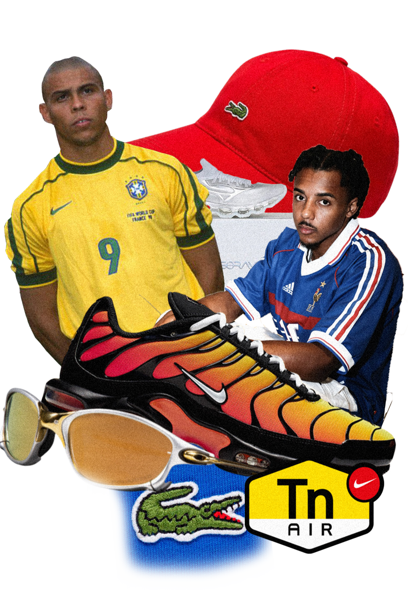

Feito do povo,
para o povo.
Chique e confortável.
O movimento estético "Sportlife" surgiu na periferia brasileira, onde a ideia é expressar a imagem daquilo que o jovem brasileiro enxerga como sua realidade, utilizando principalmente de elementos esportivos, com ênfase maior ao futebol.
Na atualidade, a ascensão do estilo possui um valor simbólico imenso ao jovem de comunidade, pois ele consegue se identificar quando vê algum artista ou celebridade utilizando as mesmas roupas.
O estilo visa utilizar de peças esportivas combinadas com artigos de moda, adicionando um toque formal a essas roupas. É normal também a utilização de camisetas antigas de clubes famosos, elucidando uma mensagem de saudosismo e valorização histórica de clubes e jogadores.
